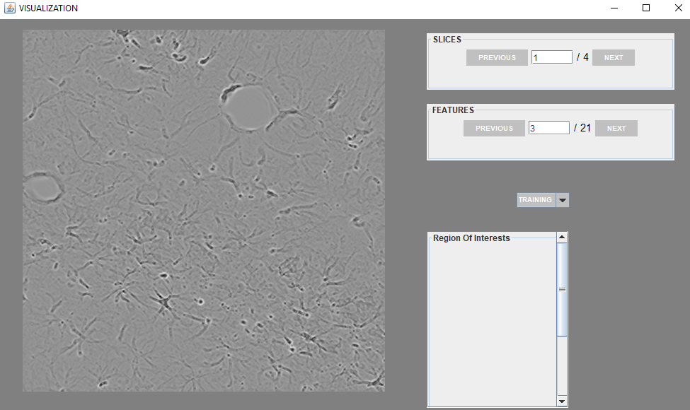

This Screen allows the user to create new segmentation and classification project. There are few mandatory fields(*) like Project Name, Directory Name,
and Training Image. The idea behind creating the project is that all the related data will be stored in specific project directory and can be loaded easily
Project Name
The project file and directory will be created with same name.
Project Desc
This is optional field to store some project related information.
Project Type
This field have two options i.e Segmentation and Classification. The user must select this field depending on their task whether
they want to perform segmentation or classification. The filters will also be loaded according so its very important to select the correct project type in the
starting.
Project Folder
Location where user wants to store the project. For example: D://Projects/
Training Image
The plugin currently support stack of images in ImageJ stack format. We will copy the stack into the project directory
once the project is successfully created.
This Screen allows the user to load the existing project, user need to click open Project button and select the respective project file in json format(i.e Astrocytes.json). The project
will be loaded automatically.
The filter screen
PREVIOUS
is used to load the previous filter.
NEXT
is used to load the next filter.
ENABLED
is used to disable the filter. The list of disabled filters will be displayed in white colored frame on right side
of filter screen. The disabled filter can be enabled by double clicking their link.
COMPUTE
is used to computes the features on the image stack. The extracted features will be stored in disk.
DEFAULT
is used to set the filters to its default value.
SAVE
is used to save the current setting of filters.
VIEW
is used to view the features extracted for each frame. You can visualize the feature but the mapping of marked ROI's on View filter screen is still in progress


UPLOAD/DOWNLOAD
The user can also upload or download region of interest to class using "upload or download buttons"
COMPUTE
Learning is started using the "COMPUTE" button. Once the learning is completed, The "overlay image" will be generated
TOGGLE
The "TOGGLE" button is used to switch between "overlay image" and "original image".
SAVE
is used to store features data i.e region of interest and class information i.e number of classes on the disk.
CONFIGURE
is used to add and delete classes. The user can also change the color of classes